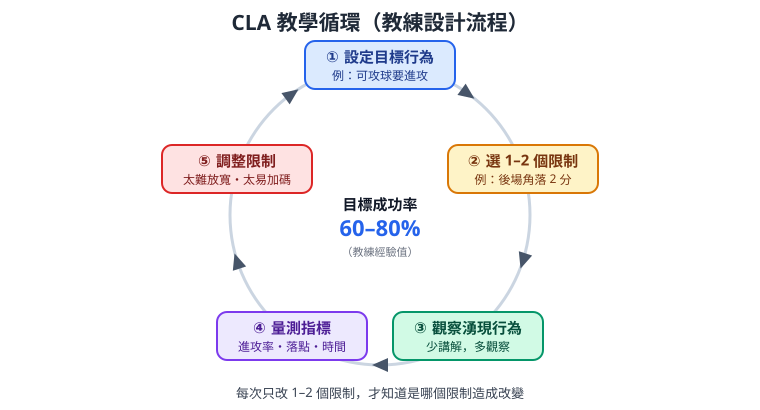

圖解 12｜不講標準動作，選手怎樣自己學會？
我讀這篇是為了回答：教練不講標準動作，選手怎樣自己學會？選一種讀法，看看先讀哪裡、讀到哪裡可以停。這套讀法是甚麼？
先讀哪裡：用頁內搜尋（電腦按 Ctrl＋F 或 ⌘＋F；手機在瀏覽器選單選「在頁面中尋找」）找關鍵詞：「個體」、「任務」、「環境」、「限制」，直接讀範例和適用條件。
何時停：找到答案，並能在手上的例子用一次。
先讀哪裡：先看下面的四欄筆記和本頁圖表，再核對比較對象、指標和適用條件。
何時停：能說出要改哪一步、觀察甚麼，以及哪項證據可能改變決定。
先讀哪裡：一次讀一節，關掉原文，用約 1 分鐘畫出三格流程，再回原文核對（可對照下面的「因果／流程」）。
何時停：能換一個情境說明，並指出一個適用條件或常見錯誤。
一句話核心Core Thesis
教練設計限制（規則、場地），讓選手自己找出有效動作。
關鍵數據Key Metrics
- 3 類限制｜個體／任務／環境
出處：本頁〈重點摘要卡〉 - 後場角落 2 分｜改得分規則的範例
出處：同上 - 網上 30 cm 限高繩｜改環境的範例，練平抽壓低
出處：同上
因果／流程Logic Flow
跨域應用Cross-Domain Link
IT 教學：我會改「專題式學習只給限制與目標，讓學生自己找解法」→ 觀察「學生解法的多樣性與完成率」
閉卷回想：蓋住上面，自己答兩題
- 畫出 CLA 的三格流程，並舉一個改環境的例子。
參考答案（先自己答完再打開）
改限制 → 選手探索 → 出現有效解法。例：網上 30 cm 拉繩，平抽自然壓低。 - 換到 IT 課：怎樣用「限制」代替一步一步的指示？
參考答案（先自己答完再打開）
只給目標和限制（例如只准用三個指令完成任務），讓學生自己找方法。
只為值得長期使用的內容排複習：隔天和第 7 天各一次。每次先蓋住筆記，口述核心、重畫機制、說出一個適用條件，各 1 分。答不全時，只回看對應段落。
Obsidian 是一個免費的筆記軟體；沒有安裝也可以把複製的內容貼到任何筆記或文件。
讀法選擇、分鐘數和複習分數只存在這部裝置的瀏覽器，不會上傳。四欄筆記依本頁內容整理；「待驗證」表示超出原文的推論。
完整內容：12 CLA 教學版、12 CLA 研究版 · 回到 首頁
📌 重點摘要卡
- 一句話核心： 教練設計限制（規則、場地），讓選手自己找出有效動作。
- 關鍵數據： 三類限制：個體／任務／環境｜範例：後場角落 2 分、網上 30 cm 限高繩、3 拍內必攻
- 因果流程：
改任務或環境限制➔選手探索並自我組織➔出現適應性的有效解法 - 跨域應用： 羽球訓練：用計分規則取代反覆口頭糾正。數據模型：以限制條件引導最佳化的搜尋空間。IT 教學：專題式學習只給限制與目標，讓學生自己找解法。
❓ 試試看
想讓選手多打後場角落，你會說「要打到角落」20 次，還是把後場角落改成 2 分？ 限制導向動作學習（Constraints-Led Approach, CLA）選後者：改規則，讓選手自己找到解法。
🎬 動畫：三種限制一起塑造動作

🖼️ 練法對比與教學循環


📊 限制操控表（直接可用）
| 改甚麼 | 怎樣改 | 練出甚麼 | 量甚麼 |
|---|---|---|---|
| 得分 | 後場角落 2 分 | 拉四角 | 角落落點 % |
| 限拍數 | 3 拍內必攻 | 搶攻、提早擊球 | 第 3 拍進攻率 % |
| 時間 | 多球間隔 1.2 → 0.9 秒 | 啟動、還原 | 到位時間 |
| 網高 | 網上 30 cm 拉繩 | 平抽壓低 | 過網高度 |
🖼️ 兩個範例


🧠 延伸知識
📝 三類限制從哪裡來？
模型來自 Newell（1986）：動作是個體、任務、環境三種限制互動的結果。教練最容易改的是任務（規則、得分）和環境（場地、網高）。
📝 功能性變異不是錯誤
頂尖選手每一拍的步法都不完全一樣，但都能到位。CLA 把這種變異當作適應能力，而不是需要消除的錯誤。
💡 口令也有差別
說「打到那個圈」（外在焦點，注意結果）通常比「手肘抬高」（內在焦點，注意身體）更有幫助；但相關研究有發表偏誤的爭議，見 第 08 章。
✅ 30 秒自我測驗
❓ 1. CLA 的三類限制是甚麼？
個體、任務、環境。
❓ 2. 想練平抽壓低，可以改哪一個環境限制？
在網上 30 cm 拉一條限高繩，球要從繩下過。
❓ 3. 「任務簡化」和「任務分解」有甚麼不同？
任務簡化保留完整的「看—判斷—打」，只降低難度；任務分解把動作拆開分段練。